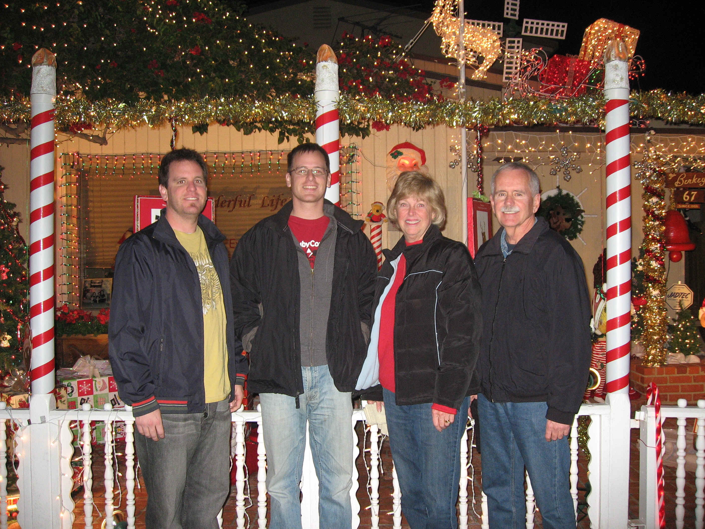

Welcome to the world of Jim and Margaret Perham and our two sons, Mike and Bob. The picture above is Christmas of 2007.
Jim retired in 1999 after a 32 year career in the aerospace industry, most of that time as an Industrial Engineer. He was enthralled as a youth by the space race which began in the 1950's and was very excited to be able to work on many defense and aerospace programs over the years. Some of the programs were the Minute Man ICBM, the B-1 Bomber, the Delta and Titan rockets, numerous satellite programs, the Space Shuttle and the International Space Station.... just to name a few. He now keeps busy by playing around on the computer and planning vacations. He also started getting involved in community theater acting in 2002.
Margaret retired in February of 2005 after working as a Pharmacist for almost 40 years. In 1975 she was honored to be the 2nd female promoted to the position of Pharmacy Manager by the Sav-on Drug Company. Over the years she worked with many excellent people and developed friendships with many of her long time customers. She now looks forward to many happy times as a retiree.
First born son Mike (second from the left in the picture) lives in Austin, Texas, and is trying to get rich in the "dot com" industry working as a computer software developer. In his free time he likes riding motorcycles and reading. His web page is at http://www.perham.net/mike.
Second born son Bob (on the left in the picture) works in cartography making maps for a company that specializes in acquiring property and right's-of-way for major utility and public works projects. In his free time, he likes playing golf and fantasy baseball. GO ANGELS!! He currently has no web page to visit.
If you would like to see a few pictures from some of our vacations, pictures from Jim's acting gigs and pictures of other activities, go to our photo gallery at http://www.perham.net/jim/gallery
In April of 2005, Margaret and I moved temporarily to Texas and began a two and a half year long odyssey traveling around the United States looking for a permanent place to live. To read a "daily diary" of our travels, go to http://perhamodyssey.blogspot.com. In it I talk about some of the places we visited and various interesting things that we saw and did plus it contains a link to an odyssey photo gallery.
Update: After almost two and a half years of traveling around the country, partly for the purpose of looking for a new place to live, Margaret and I decided to move back to California. Though there are many great places all over the country, we decided that there just wasn't any place better than California for what we were looking for in a place to live. As the old saying goes..."Sometimes you don't know what you've got until you don't have it anymore". So, in September of 2007, we moved back to California.... not back into our large house in Seal Beach that we had moved out of but rather into our smaller house in Los Alamitos. As another old saying goes...."It's great to be home". Thus ends our two and a half year odyssey.
Should you desire to contact us, you may do so at jim@perham.net to convey any profound pronouncements or pointed pontifications.
-----------------------------------------------------------------------------------------------------------------------------
All material on this page is copyrighted, trademarked, registered, patented, sanforized and homogenized by Jim Perham, circa 2008 and every year thereafter. Use thereof by any other persons, living or dead, is not only illegal but also to be pitied.
This site has received hits. Last
update: June 4, 2008.